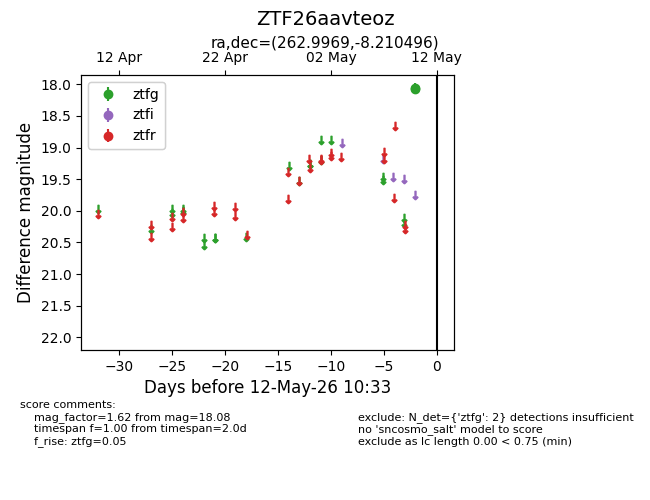
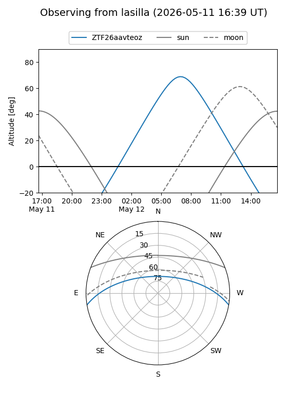
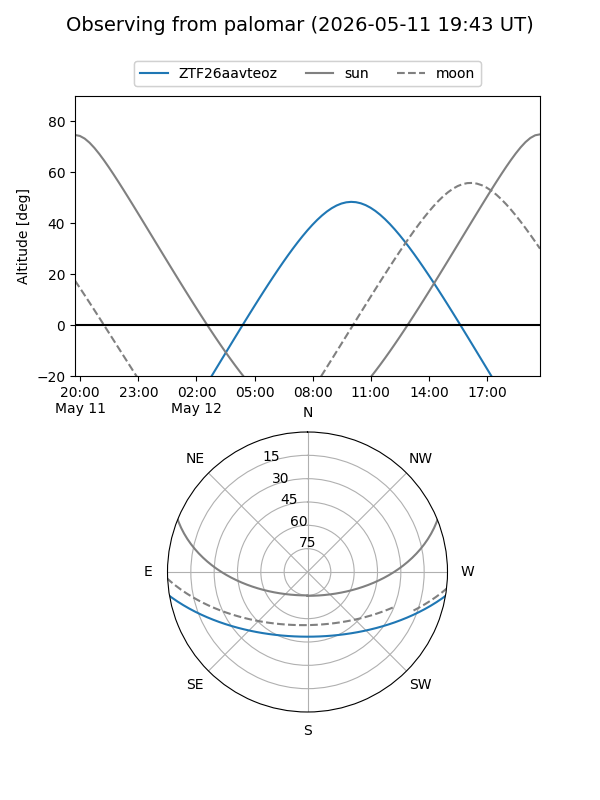

ZTF26aavteoz
Target ZTF26aavteoz at 2026-05-12 10:35
Aliases and brokers:
FINK: link
Lasair: link
ALeRCE: link
alt names
ZTF26aavteoz (ztf,fink_ztf)
Coordinates:
equatorial (ra, dec) = 262.9969,-8.21050
equatorial (HMS+DMS) = 17:31:59.26,-08:12:37.78
galactic (l, b) = (16.1662,+13.54261)
Flags:
Photometry:
last ztfg=18.08
2 ztfg detections
Lightcurve

Visibility


Additional plots